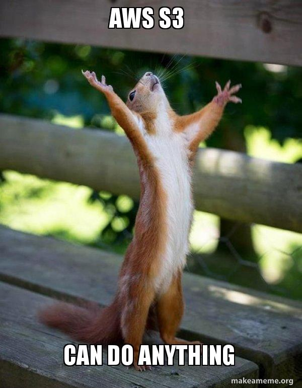

환영합니다 👋
이 페이지는 AWS(Amazon Web Services) S3(Simple Storage Service)의 정적 웹사이트 호스팅 기능으로 서비스되고 있습니다.
실습 목표
- S3 버킷 생성 및 퍼블릭 액세스 설정 이해
- 정적 웹페이지(
index.html,error.html) 업로드 - S3 웹사이트 엔드포인트(URL, Uniform Resource Locator)로 접속 테스트
이미지 업로드 테스트
S3 버킷에 aws-s3.jpg 파일을 업로드했다면 아래 이미지가 표시됩니다.

이미지가 보이지 않으면 파일 경로 또는 퍼블릭 권한 설정을 다시 확인해 보세요.